前言
資料庫分為兩種
- 系統資料庫
- 使用者資料庫
而這篇會介紹使用者資料庫的建置、更新及刪除，且使用 SSMS 及執行 T-SQL 指令兩種方式進行
目錄
建置 CREATE DATABASE
- 建置資料庫
更新 ALTER DATABASE
- 重新命名
- 新增資料或紀錄到資料庫
- 變更資料庫大小
刪除 DROP DATABASE
- 刪除資料庫
建置資料庫
CREATE DATABASE
開始建置資料庫前得先知道…
Limitations and Restrictions
- 在 SQL Server 的執行個體上，每個執行個體最多只可指定 32,767 個資料庫
Prerequisites
- CREATE DATABASE 必須在 Autocommit Mode（預設交易管理模式）下執行，且不允許在明確或隱含的交易內
Recommendations
- 每當對資料庫進行增刪修時，建議對 master Database 進行備份
- 當要新增一個資料庫時，建議檢查空間大小是否足夠提供給新的資料庫使用
Security
- 需要 master 資料庫的 CREATE DATABASE 權限或 CREATE ANY DATABASE 或 ALTER ANY DATABASE 權限
使用 Management Studio 管理介面
📌 Step 1
展開 SQL Server 執行個體，對資料庫執行右鍵，選擇［新增資料庫］
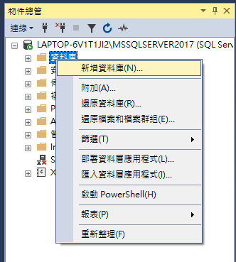
📌 Step 2
在新增資料庫對話框中，輸入資料庫名稱（Sales），點擊確定
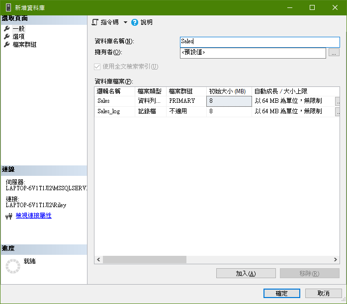
📌 Step 3
在物件總管展開資料庫就可看到新建的資料庫，若沒看到對資料庫點擊右鍵執行重新整理。
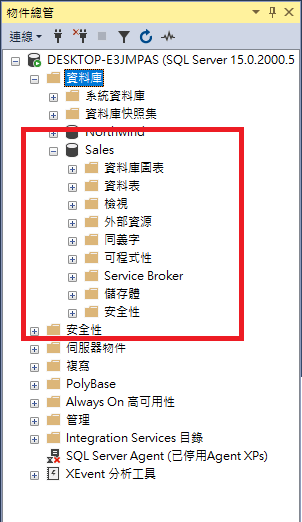
執行 T-SQL 指令
使用 CREATE DATABASE 指令建置資料庫，參考規則
1 | CREATE DATABASE 資料庫名稱 |
執行下列程式碼
1 | USE MASTER |
查看訊息視窗輸出文字，建置成功
命令已成功完成。
完成時間: 2020-05-19T12:55:59.5509305+08:00
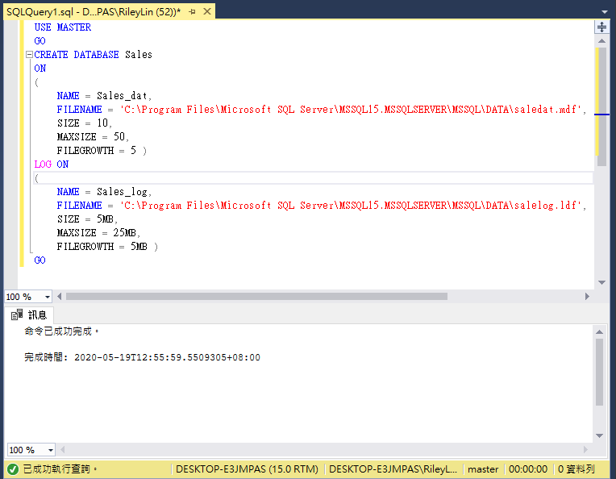
更新資料庫
ALTER DATABASE
1. 重新命名
使用者只能對使用者資料庫重新命名，無法對系統資料庫重新命名，在執行 Rename 時若有其他使用者正在存取資料庫，將會無法變更資料庫名稱，而 Rename 前的先決條件是必須具有對資料庫 ALTER 的權限
使用 Management Studio 管理介面
📌 Step 1
展開 SQL Server 執行個體，選擇欲重新命名的資料庫，執行右鍵，選取［重新命名］
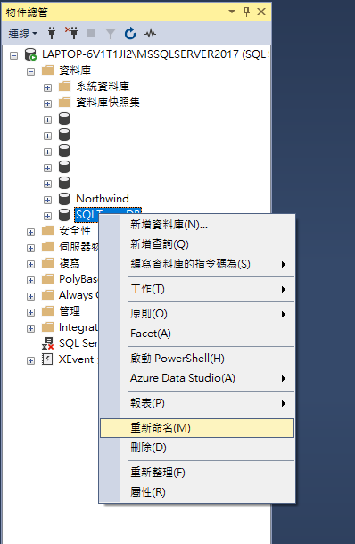
📌 Step 2
輸入新命名，Enter 完成命名
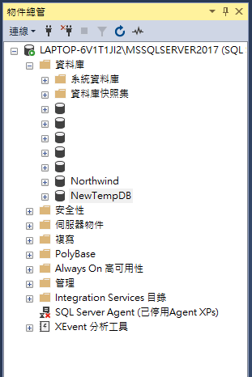
執行 T-SQL 指令
使用 ALTER DATABASE 指令，參考規則
1 | ALTER DATABASE 資料庫名稱 |
執行下列指令碼
1 | ALTER DATABASE SQLTempDB |
使用系統預存程序
使用 EXEC 指令，參考規則
1 | EXEC sp_rename_db 資料庫名稱, 新資料庫名稱 |
執行下列指令碼
1 | EXEC sp_rename_db SQLTempDB, NewTempDB |
2. 新增資料或紀錄到資料庫
新增資料或紀錄檔時，唯一限制為 BACKUP 陳述式執行時不可新增或移除檔案，而先決條件則為需具有資料庫的 ALTER 權限
使用 Management Studio 管理介面
📌 Step 1
展開 SQL Server 執行個體，對欲增加資料或記錄的資料庫，執行右鍵，選擇［屬性］
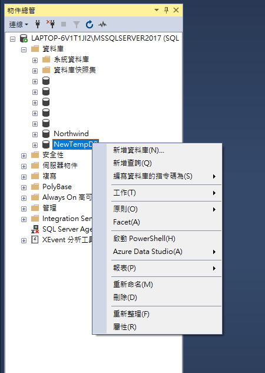
📌 Step 2
在資料庫屬性對話方塊中選取「檔案」頁面，點擊加入來新增資料與記錄
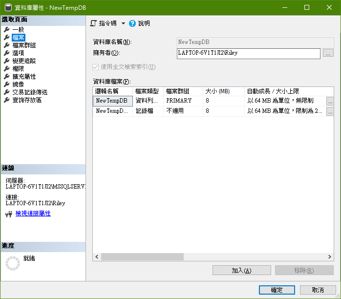
📌 Step 3
新增資料列資料名為 NewTempDB_2、新增記錄檔名為 NewTempDB_2_log
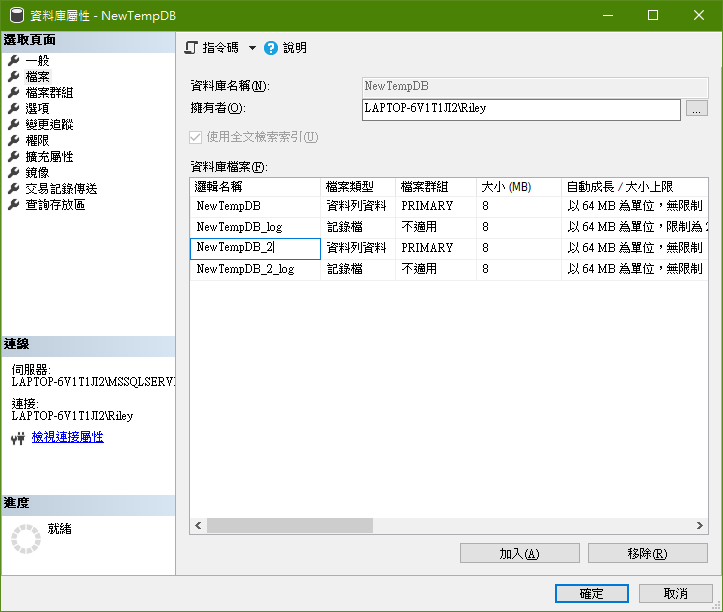
📌 Step 4
選取「檔案群組」頁面，點擊「新增檔案群組」，新增名為 SQLTemp 檔案群組。
注意目前 PRIMARY 檔案為 2，新增的 SQLTemp 為 0，下一步將前往檔案頁面設置檔案群組的配置。
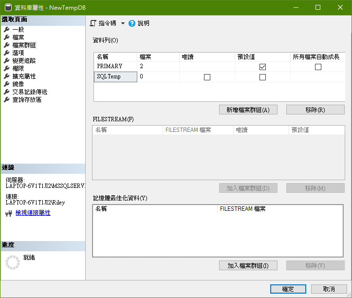
📌 Step 5
回到檔案頁面，將 NewTempDB_2 資料列資料的檔案群組設置為 SQLTemp
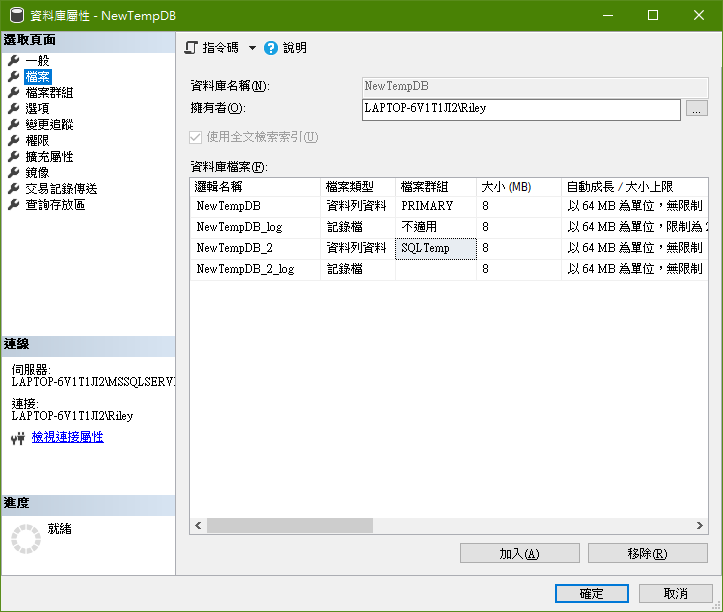
📌 Step 6
在回到檔案群組，PRIMARY 檔案數量已變更為 1、SQLTemp 也為 1。
最後按下確定來完成資料變更。
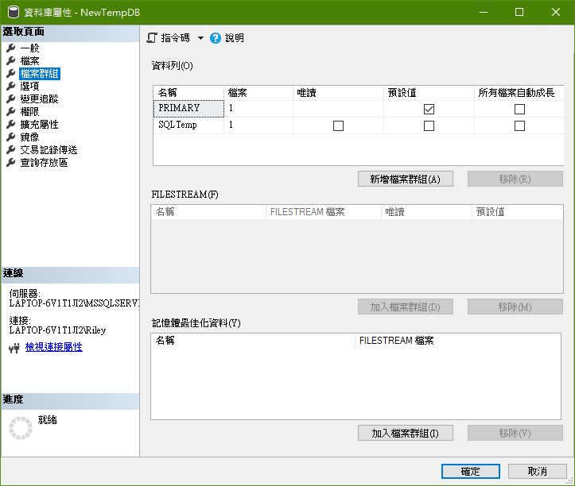
執行 T-SQL 指令
使用 ALTER DATABASE 指令，參考規則
1 | --檔案群組 |
執行下列指令
1 | --新增 SQLTemp 檔案群組 |
3. 變更資料庫大小
BACKUP 陳述式執行時不可新增或移除檔案，而先決條件則為需具有資料庫的 ALTER 權限
使用 Management Studio 管理介面
展開 SQL Server 執行個體，對欲變更的資料庫執行右鍵，選擇［屬性］
對要變更的資料庫檔案調整大小（MB），完成點擊確定。
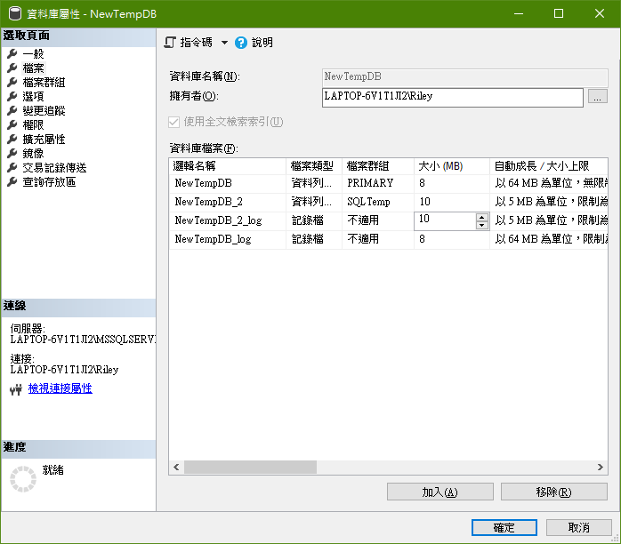
執行 T-SQL 指令
1 | -- 變更資料檔為10MB |
刪除資料庫
DROP DATABASE
刪除資料庫前得先知道…
Limitations and Restrictions
- 系統資料庫無法刪除
Recommendations
- 請先進行完整資料庫備份，刪除的資料庫只能透過還原備份重新建立
Security
- 執行 DROP DATABASE 使用者至少要具備對該資料庫的 CONTROL 權限
使用 Management Studio 管理介面
📌 Step 1
展開 SQL Server 執行個體，對欲刪除的資料庫執行右鍵，選擇［刪除］
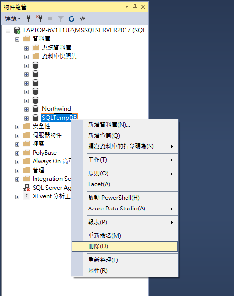
📌 Step 2
在刪除物件對話框中，點擊確定
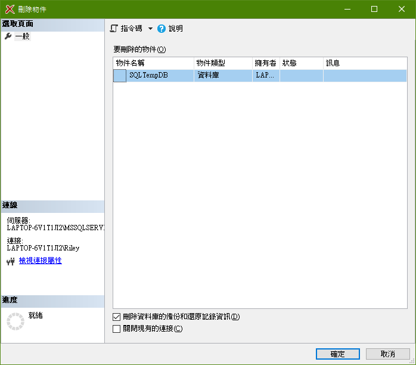
📌 Step 3
完成後，可以看到指定刪除項目已經不存在
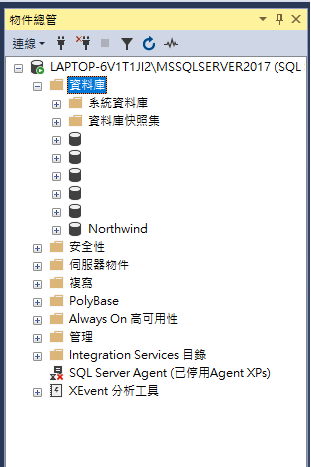
執行 T-SQL 指令
使用 DROP DATABASE 指令刪除資料庫，參考規則
1 | DROP DATABASE 資料庫名稱 |
執行下列指令碼，可同時刪除兩個資料庫
1 | DROP DATABASE SQLTempDB, NewSQLTempDB |
Reference
Create a Database
Rename a Database
Add Data or Log Files to a Database
Increase the size of a Database
Delete a Database